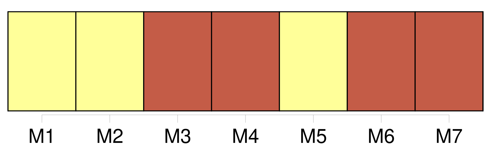
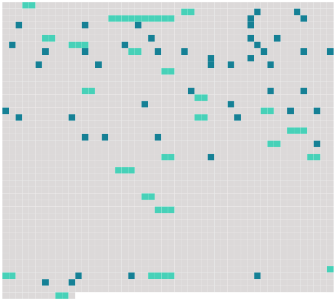

Longueur nb maillons : 70 mentions |
  |
Le consentement mutuel [des époux] ne sera point admis, si le mari a moins de vingt-cinq ans, ou si la femme est mineure de vingt-un ans. [5 phrases]
Dans aucun cas, le consentement mutuel [des époux] ne suffira, s'il n'est autorisé par [leurs] pères et mères ou par [leurs] autres ascendans vivans, suivant les règles prescrites par l'article 150, au titre du Mariage. [1 phrases]
[Les époux déterminés à opérer le divorce par consentement mutuel] , seront tenus de faire préalablement inventaire et estimation de tous [leurs] biens meubles et immeubles et de régler [leurs] droits respectifs, sur lesquels il [leur] sera néanmoins libre de transiger. [1 phrases]
[Ils] seront pareillement tenus de constater par écrit [leur] convention sur les trois points qui suivent :
À qui les enfans nés de [leur] union seront confiés, soit pendant le temps des épreuves, soit après le divorce prononcé ; [3 phrases]
[Les époux] se présenteront ensemble, et en personne devant le président du tribunal civil de [leur] arrondissement, ou devant le juge qui en fera les fonctions, et lui [feront] la déclaration de [leur] volonté, en présence de deux notaires amenés par [eux] [1 phrases]
Le juge fera aux [deux époux réunis] , et à chacun d' [eux] en particulier, en présence des deux notaires, telles représentations et exhortations qu'il croira convenables ; il [leur] donnera lecture du chapitre IV du présent titre, qui règle Les effets du Divorce, et [leur] développera toutes les conséquences de [leur] démarche. [1 phrases]
Si [les époux] persistent dans [leur] résolution, il [leur] sera donné acte, par le juge, de ce qu' [ils] demandent le divorce et y [consentent] mutuellement ; et [ils] seront tenus de produire et déposer à l'instant, entre les maint des notaires, outre les actes mentionnés aux articles 279 et 280,
Les actes de [leur] naissance, et celui de [leur] mariage ;
Les actes de naissance et de décès de tous les enfans nés de [leur] union ; La déclaration authentique de [leurs] père et mère ou autres ascendans vivans, portant que, pour les causes à, [eux] connues, [ils] autorisent tel ou telle, [leur] fils ou fille, petit-fils ou petite-fille, marié ou mariée à tel ou telle, à demander le divorce et à y consentir.
Les pères, mères, aïeuls et aïeules [des époux] , seront présumés vivans jusqu'à la représentation des actes constatant leur décès. [4 phrases]
[Les parties] seront obligées à rapporter chaque fois la preuve, par acte public, que [leurs] pères, mères, ou autres ascendans vivans, persistent dans [leur] première détermination ; mais [elles] ne seront tenues à répéter la production d'aucun autre acte. [1 phrases]
Dans la quinzaine du jour où sera révolue l'année, à compter de la première déclaration, [les époux] , assistés chacun de deux amis, personnes notables dans l'arrondissement, âgés de cinquante ans au moins, se présenteront ensemble et en personne devant le président du tribunal ou le juge qui en fera les fonctions ; [ils] lui remettront les expéditions en bonne forme, des quatre procès-verbaux contenant [leur] consentement mutuel, et de tous les actes qui y auront été annexés, et [requerront] du magistrat, chacun séparément, en présence néanmoins l'un de l'autre et des quatre notables, l'admission du divorce. [1 phrases]
Après que le juge et les assistans auront fait leurs observations [aux époux] , s' [ils] persévèrent, il [leur] sera donné acte de [leur] réquisition, et de la remise par [eux] faite des pièces à l'appui le greffier du tribunal dressera procès-verbal, qui sera signé tant par [les parties] ( à moins qu' [elles] ne déclarent ne savoir ou ne pouvoir signer auquel cas il en sera fait mention ), que par les quatre assistans, le juge et le greffier. [3 phrases]
Si le commissaire du Gouvernement trouve dans les pièces la preuve que [les deux époux] étaient âgés, le mari de vingt-cinq ans, la femme de vingt-un ans, lorsqu' [ils] ont fait [leur] première déclaration ; qu'à cette époque [ils] étaient mariés depuis deux ans, que le mariage ne remontait pas à plus de vingt, que la femme avait moins de quarante-cinq ans, que le consentement mutuel a été exprimé quatre fois dans le cours de l'année, après les préalables ci-dessus prescrits et avec toutes les formalités requises par le présent chapitre, notamment avec l'autorisation des pères et mères [des époux] , ou avec celle de [leurs] autres ascendans vivans en cas de prédécès des pères et mères, il donnera ses conclusions en ces termes, La loi permet ; dans le cas contraire, ses conclusions seront en ces termes, La loi empêche. [2 phrases]
S'il en résulte que, dans l'opinion du tribunal, [les parties] ont satisfait aux conditions et [rempli] les formalités déterminées par la loi, il admettra le divorce, et renverra [les parties] devant l'officier de l'état civil, pour le faire prononcer dans le cas contraire, le tribunal déclarera qu'il n'y a pas lieu à admettre le divorce, et déduira les motifs de la décision. [1 phrases]
L'appel du jugement qui aurait déclaré ne pas y avoir lieu à admettre le divorce ne sera recevable qu'autant qu'il sera interjeté par [les deux parties] et néanmoins par actes séparés dans les dix jours au plutôt et au plus tard dans les vingt jours de là date du jugement de première instance. [6 phrases] En vertu du jugement qui admettra le divorce, et dans les vingt jours de sa date, [les parties] se présenteront ensemble et en personne devant l'officier de l'état civil, pour faire prononcer le divorce. [8 phrases]
Dans le cas de divorce par consentement mutuel, aucun [des deux époux] ne pourra contracter un nouveau mariage que trois ans après la prononciation du divorce. [17 phrases]
Dans le cas de divorce par consentement mutuel, la propriété de la moitié des biens de chacun [des deux époux] sera acquise de plein droit, du jour de [leur] première déclaration, aux enfans nés de [leur] mariage : [les père et mère] conserveront néanmoins la jouissance de cette moitié jusqu'à la majorité de [leurs] enfans, à la charge de pourvoir à leur nourriture, entretien et éducation, conformément à [leur] fortune et à [leur] état ; le tout sans préjudice des autres avantages qui pourraient avoir été assurés auxdits enfans par les conventions matrimoniales de leurs père et mère. [5 phrases]
Elle sera intentée, instruite et jugée de la même manière que toute autre action civile : elle ne pourra avoir lieu par le consentement mutuel [des époux] |
 |
La ressource peut être téléchargée sur la page Ortolang
Si vous avez des questions ou vous voyez des erreurs, merci d'envoyer un mail à silvia.federzoni89@gmail.com
Site développé par S. Federzoni (contact)